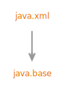

Module java.xml
Defines the Java API for XML Processing (JAXP), the Streaming API for XML (StAX),
the Simple API for XML (SAX), and the W3C Document Object Model (DOM) API.
- Module Graph:
- 
- Since:
- 9
{kind=link}
-
Packages
Exports Package Description javax.xml Defines constants for XML processing.javax.xml.catalog Provides the classes for implementing XML Catalogs OASIS Standard V1.1, 7 October 2005.javax.xml.datatype Defines XML/Java Type Mappings.javax.xml.namespace Defines XML Namespace processing.javax.xml.parsers Provides the classes for processing XML documents with a SAX (Simple API for XML) parser or a DOM (Document Object Model) Document builder.javax.xml.stream Defines interfaces and classes for the Streaming API for XML (StAX).javax.xml.stream.events Defines event interfaces for the Streaming API for XML (StAX).javax.xml.stream.util Provides utility classes for the Streaming API for XML (StAX).javax.xml.transform Defines the generic APIs for processing transformation instructions, and performing a transformation from source to result.javax.xml.transform.dom Provides DOM specific transformation classes.javax.xml.transform.sax Provides SAX specific transformation classes.javax.xml.transform.stax Provides StAX specific transformation classes.javax.xml.transform.stream Provides stream and URI specific transformation classes.javax.xml.validation Provides an API for validation of XML documents.javax.xml.xpath Provides an object-model neutral API for the evaluation of XPath expressions and access to the evaluation environment.org.w3c.dom Provides the interfaces for the Document Object Model (DOM).org.w3c.dom.bootstrap Provides a factory for obtaining instances ofDOMImplementation.org.w3c.dom.events Provides interfaces for DOM Level 2 Events.org.w3c.dom.ls Provides interfaces for DOM Level 3 Load and Save.org.w3c.dom.ranges Provides interfaces for DOM Level 2 Range.org.w3c.dom.traversal Provides interfaces for DOM Level 2 Traversal.org.w3c.dom.views Provides interfaces for DOM Level 2 Views.org.xml.sax Provides the interfaces for the Simple API for XML (SAX).org.xml.sax.ext Provides interfaces to SAX2 facilities that conformant SAX drivers won't necessarily support.org.xml.sax.helpers Provides helper classes, including support for bootstrapping SAX-based applications. -
Services
Uses Type Description DatatypeFactory Factory that creates newjavax.xml.datatypeObjects that map XML to/from JavaObjects.DocumentBuilderFactory Defines a factory API that enables applications to obtain a parser that produces DOM object trees from XML documents.SAXParserFactory Defines a factory API that enables applications to configure and obtain a SAX based parser to parse XML documents.SchemaFactory Factory that createsSchemaobjects.TransformerFactory A TransformerFactory instance can be used to createTransformerandTemplatesobjects.XMLEventFactory This interface defines a utility class for creating instances of XMLEventsXMLInputFactory Defines an abstract implementation of a factory for getting streams.XMLOutputFactory Defines an abstract implementation of a factory for getting XMLEventWriters and XMLStreamWriters.XMLReader Interface for reading an XML document using callbacks.XPathFactory AnXPathFactoryinstance can be used to createXPathobjects.